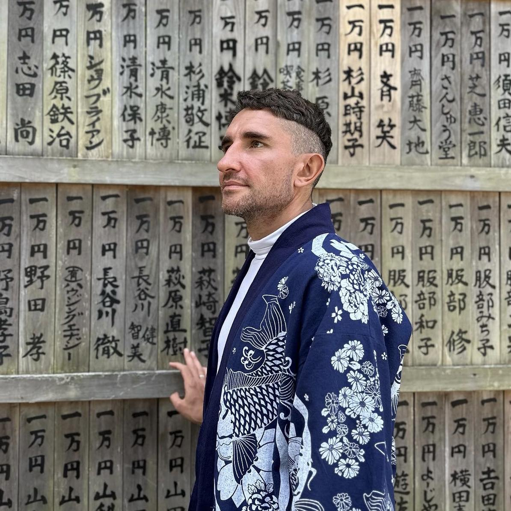

Dykyi Roman
Senior Software Engineer
Email: mr.dukuy@gmail.com
Philosophy
- Тот кто сегодня читает книги, завтра будет управлять теми кто их не читает. Я полностью уверен что прочитав 100 осознано выбраных книг ты будешь другим человеком. Меняется мышления. Мозг не решето, все что туда попало там и остаться. Не нужно смотреть тв, и глупые передачи. Нужно читать сложные книги и смотреть сложные фильмы и слушать сложную музыку.
- Человек сначала думает, потом говорит, потом делает. Все это превращается в поступки, поступки определяют характер, а характер определяет жизнь.
- Кто хочет, тот ищет возможности, кто не хочет — ищет причины
- work, work, work - no results, but you stay better. work, work, work, work - no results, but you stay better. work, work - success!
- Мечта записана с датой становиться целю. Цель разбитая на шаги становиться планом. А план подкрепленный действиями воплощается в мечту в реальность
- Если я делаю работу за 30 минут. Все подумают что это везение потому что она выполняется 3 часа. И никто не подумает что я потратил пять лет своей жизни для того чтобы выполнять её за 30 минут.
- Успех в жизни происходит от правильно принятого решения. Правильно принятое решение происходит из опыта. А опыт происходит из неправильно принятого решения. Поэтому идите, делайте, ошибайтесь, разбивайте носы, меняйте подходы. Рано или поздно вы обречены на успех. Во всем.
- Большой результат завтра состоит с маленьких побед сегодня
- У нас есть две жизни, вторая начинается тогда. Когда ты понимаешь что жизнь на самом деле одна.
- Простые люди обсуждают - людей, талантливые — события, а великие — идеи. Этот афоризм подчеркивает различия в уровнях интересов и мышления: разговоры на тему людей могут быть поверхностными, обсуждение событий требует большего анализа, а размышления над идеями демонстрируют глубокое понимание и стремление к развитию.
- Учиться должно быть сложно. Все что ты узнаешь в 20 лет остается с тобой на всу жизнь. Все что узнаешь в 45 помнишь пару лет. Пропустив эти годы обучения до 25 лет. Ты пропустишь очень многое
- Ты работаешь 8 часов чтобы жить 4. Ты работаешь 5 дней чтобы жить 2. Ты работаешь весь год чтобы взять 1-2 недели отпуска. Ты работаешь всю жизнь чтобы уйти на пенсию в старости. Не делай так!
- Успех — это как беременность: все поздравляют, но никто не знает, сколько раз вам пришлось попытаться, прежде чем это произошло.
- Все что мы после себя оставим в этом жизни это ребенок или свой бренд. Все остальное не имеет никакого смысла и ценности
- В школе нам преподают урок, потом просят пройти тест или испытания. В жизни ты проходишь через испытания с которого должен вынести урок
- Всегда в любой подаче информации есть обект субективизма. Если ее подает учитель который 3 месяца не получал з/п это будет одна подача, если миллионер - друга. Это нужно всегда учитывать
- Красота в глазах смотрящего. Понедельник- не плохой. Погода - не плохая. Работа - не отстой. Все это только в нашей голове, то как мы воспринимаем это и думаем об этом. Нужно избавляться от негативного мышления, оно порождает цепочку негативных событий
- <- == ->
- Все проходит, пройдет и это. Радуйся тому, что у тебя есть. Помни, что это может закончиться. Не грусти по поводу того, что какие то неприятности. Это тоже пройдет.
- Не все люди обязаны быть умными, сильными как мы думаем про себя. Нужно научиться быть снисходительным и даже добрым к ним. Если ты реагируешь на всех - ты не самодостаточен и слаб внутри. Нужно тренироваться. Тогда ты будешь как Будда - принимать все и не обращать внимания на глупости и мелочи.
- Люди понимают людей только со своего уровня восприятия, и никакие споры не стоят того, чтобы пытаться изменить это. Каждый человек воспринимает мир через призму собственного опыта, знаний и убеждений. Споры часто бесполезны, потому что участники не способны выйти за рамки своего восприятия и принять чужую точку зрения. Настоящее понимание и прогресс происходят, когда люди открываются к диалогу и готовы рассмотреть другие перспективы, вместо того чтобы настаивать на своей правоте.
- Никогда не продавай дёшево свой труд. Один Рабочий день стоит Один день твоей жизни.
- На работе ты никогда не разбогатеешь, ты будешь жить просто в достатку. Чтобы стать действительно богатым и никогда ни в чем себе не отказывать, нужно придумывать что-то другое. Для финансовой благополучия должно быть несколько источников пассивного дохода. Активный доход должен формироваться с твоей приватной деятельности. Работая на кого-то ты создаешь его мечту а не свою. Работа/управления - должно быть удаленной, это позволит путешествовать и наслаждаться жизнью.
- Если вы положите бананы и деньги перед обезьянами, обезьяны выберут бананы, потому что обезьяны не знают, что за деньги можно купить много бананов. Фактически, если вы предлагаете людям Работу и Бизнес, они выберут Работу, потому что большинство людей не знают, что Бизнес может приносить больше Денег, чем зарплата. Одна из причин, по которой бедные являются бедными, заключается в том, что они не обучены распознавать возможности для предпринимательства. Прибыль лучше, чем заработная плата, потому что заработная плата может поддерживать вас, но прибыль может принести вам состояние.
- Когда тебе действительно всё равно что тебе думать другие, поздравляю. Ты до стих опасного уровня свободы
- Трудности даются для того чтобы не дать успех случайным людям
- 2 человека которые выполняют работу на 70% лучше чем один который выполняет на 100%. Учись делегировать. Всегда должна быть стратегия выхода с бизнеса. Иначе он закроется после твоего ухода
- Наш мир это книга. Человек который не путешествует читает только одну страницу. Если есть такая возможность - Путешествуй по экзотичным странам, с каждым годом это делать будет сложнее. Комфортный мир оставь на потом.
- Пробивайтесь вперед: ничто на свете не заменит настойчивости. Ее не заменит талант – нет ничего обычнее талантливых неудачников. Ее не заменит гениальность – нереализованный гений уже стал притчей. Ее не заменит хорошее образование – мир полон образованных изгоев. Всемогущи лишь настойчивость и упорство
- Никогда, никому не завидуй. Завидуя ты завидуешь результату. К нему ты должен прибавить путь по которому пришел человек к этому результату. Ты не знаешь есть ли у него жена или нет, стреляли в него или нет, счастлив он или нет.
- Вещи о которых нужно молчать: планы, слабости, неудачи, секреты, следующие шаги, доходах и их источниках
- Формируй правильное окружение. С людей у которых можно чему-то научиться. Которые будут успешнее тебя. Посмотри на 5 своих друзей и спроси хотел ли ты чтобы твой ребенок был похож на него?
- Не воспитывай детей, они будут все равно похожи на тебя. Занимайся собой.
- Что делает человека бедным: мышления, ограничение которые сами ставим и его окружение.
- Перед нами часто стоит выбор быть правой или счастливой. Выбрать нужно второе. Быть счастливым или нет на протяжении дня это только твой выбор. Будет много факторов которые будут делать все чтобы помешать: не вкусный кофе, плач ребенка, плохая погода… только от тебя и твоего восприятия окружения зависит будешь ты сегодня счастлив или нет. Этот выбор мы делаем утром когда просыпаемся.
- Важно ставить цель, достигнуть ее, хвалить себя. Это повышает самоуверенность. Потом ставить чуть больше цель, не большую чтобы не сломаться. И через 3-5 таких циклов у тебя будет бетонная уверенность в себе.
- Хуже самолечение может быть только само диагноз. Нужно доверять медицине.
- Если ты родился бедным, это не твоя вина, а если ты умер бедный, это твоя вина
- Молодость — это мимолетный рассвет, когда тело звенит энергией, а время кажется бесконечным. К тридцати годам ветер жизни начинает менять направление: то, что давалось легко, требует усилий, а свобода движений обрамляется тихой мудростью возраста. Не жди, пока закат намекнёт тебе о скоротечности — пей жизнь полной чашей, пока её вкус ещё обжигает губы свежестью неиспытанных возможностей
- Не гонись за тем, чтобы казаться «крутым» в глазах тех, кто сам помешан на этом. Если такие люди появляются рядом — держись от них подальше. Настоящий успех — жить так, как тебе комфортно, а не подстраиваться под чужие глупые стандарты.
- Через 100 лет мы все будем похоронены, и нас никто не вспомнит. Важно помнить, что наша жизнь коротка и быстротечна. Вместо того чтобы стремиться к вечной славе или признанию, следует сосредоточиться на том, чтобы жить осмысленно, делать добро и оставлять положительный след в жизни тех, кто нас окружает. Истинная ценность нашей жизни заключается не в том, сколько людей нас запомнит, а в том, какое влияние мы оказали на мир и на близких нам людей. этот профиль. Нам не стоит беспокоиться о 95% вещей
- Давай деньги чтобы ребенок что-то делал, и никогда на то чтобы ничего не делал